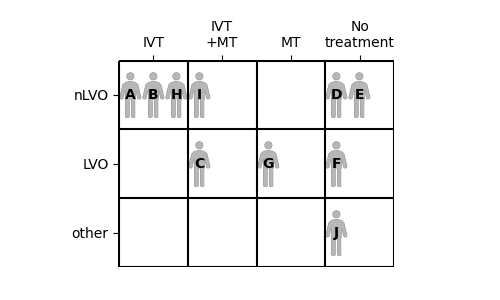

Documentation: Discrete outcome model#
This notebook describes how the discrete outcome model works.
If you’re looking for an example of the code to run the model, look at the demo notebook instead.
The discrete outcome model calculates modified Rankin Scale (mRS) distributions for ischaemic stroke patients. The outcomes depend on time to treatment with intravenous thrombolysis (IVT) or mechanical thrombectomy (MT). The results are broken down separately for large vessel occulusions (LVO) and non large vessel occlusions (nLVO).
This model is called “discrete” because each patient is assigned one integer mRS score at each point of the calculation. For example, a patient can have an mRS score of 1 or of 2, but never of 1.2. The score must be one of seven discrete values - 0 to 6 inclusive.
The model also calculates utility-weighted mRS scores.
Summary of the method:#
These steps will be shown in more detail in the rest of this document.
Import the base mRS distributions
Take the patient data, which must include:
Stroke type
Whether treated with IVT, and if so the time from onset to IVT
Whether treated with MT, and if so the time from onset to MT
Either the pre-stroke mRS score, or an fixed probability score
Group the patients by stroke type and treatment. The subgroups are:
nLVO and IVT
LVO and IVT
LVO and MT
Calculate the patient mRS distributions for each subgroup.
The outcomes vary with time. Patients who receive treatment have their post-stroke mRS distribution calculated for their individual treatment times.
Patients who receive treatment after the time of no effect use the mRS distribution at the time of no effect.
Patients who receive no treatment use the mRS distribution for no treatment.
Read each patient’s post-stroke mRS score from the mRS distributions by using their fixed probability, and convert to utility.
Also read each patient’s mRS score and utility had they not been treated and find the shift in mRS and utility due to treatment.
Combine the subgroups to match the input patient data
Each patient in the input data is given only one set of post-stroke data even if they appear in multiple subgroups.
Limitations and notes:#
Randomness: There are random elements in the conversion from mRS score to an fixed probability. If the code is run twice, it will return different results.
nLVO with MT: For MT, there are only mRS probability distributions for patients with LVOs. If a patient with an nLVO is treated with MT, the patient details are quietly updated to reassign them as LVO and so use the base LVO mRS distributions for pre-stroke, no-treatment, and no-effect.
Multiple treatments: Some patients receive both IVT and MT. Separate outcomes are calculated for each case and stored in the LVO+IVT and LVO+MT results dictionaries. However in the combined full cohort outcomes, only one of the sets of outcomes can be used. The chosen set is the one with the better improvement in outcomes. The separate LVO+IVT and LVO+MT results dictionaries are then not updated to remove the rejected set of outcomes, so any mean shifts in values across the LVO+IVT group (for example) could include data that was not actually used in the combined full cohort outcomes.
Stroke type codes: Internally, stroke types are referred to by a number rather than their full name. The codes are:
0 - “other” stroke type
1 - nLVO
2 - LVO
This is done to make all of the input data numeric and so easier to export.
“Other” stroke types: Currently “other” stroke types are not used in the calculations. This is due to the unavailability of mRS probability distributions for various “other” stroke types.
Notebook setup#
import numpy as np
import pandas as pd
Base outcomes and means#
The outcome model uses the following probability distributions of modified Rankin scale (mRS) by default:
Notes:
The pre-stroke and no-treatment distributions are identical for all LVO patients regardless of whether IVT and/or MT were considered.
Probability with time#
We know that the size of the effect of treatment depends on how soon the treatment was administered after the stroke onset. This means that the post-stroke mRS distribution we associate with a patient depends on their treatment time.
To find the mRS distribution at any time, a summary of the steps is:
Take the base probability mRS distributions for treatment at time zero and for treatment at the time of no effect.
Convert the probabilities to odds and then to log(odds).
Assume that log(odds) decreases linearly with time from the time-zero values to the time-of-no-effect values. Connect each time-zero value to its matching time-of-no-effect value with a straight line.
At the required treatment time, find the height of the straight line to find the log(odds) at that time.
Record one value of log(odds) for each mRS score.
Convert these log(odds) to units of odds and then to units of probability.
The full mathematics behind calculating the probability distributions with time can be found in the online book for the SAMueL-2 project.
The resulting changes of probability with time are shown in the following images:

When we know the time of treatment for a patient, we can refer to these probability with time relations to find the post-stroke mRS distribution at that time.
Code reference#
The post-stroke mRS distributions are calculated in the function _calculate_probs_at_treatment_time(). The relevant part of that function is as follows:
"""
l | Draw a straight line between the log-odds
o |x1 treated at time zero and the time of no effect.
g | \ at "o" Then the log-odds at the chosen treatment
o | \ time lies on this line.
d | o
d | \
s |__________x2__
time
The (x,y) coordinates of the two points are:
x1: (0, t0_logodds)
x2: (time_no_effect_mins, no_effect_logodds)
o: (time_to_treatment_mins, treated_logodds)
"""
# Calculate fraction of time to no effect passed
frac_to_no_effect = time_to_treatment_mins / time_no_effect_mins
# Combine t=0 and no effect distributions based on time passed
treated_logodds = ((frac_to_no_effect * no_effect_logodds) +
((1 - frac_to_no_effect) * t0_logodds))
# Convert to odds and probabilties
treated_odds = np.exp(treated_logodds)
treated_probs = treated_odds / (1 + treated_odds)
# Manually set all of the probabilities for mRS<=6 to be 1
# as the logodds calculation returns NaN.
treated_probs[:, -1] = 1.0
Fixed probability#
We use an fixed probability to compare a patient’s expected mRS score across multiple mRS distributions. Rather than picking the score randomly from anywhere in the distribution, we always pick the score from the same cumulative probability value. This method is independent of where exactly the mRS score boundaries are in the distributions.
The main advantage of this method is that when it is used to select mRS scores for large numbers of patients, the distribution of picked mRS scores will recreate the mRS distribution that we started with.
The main disadvantage is that the results are limited for an individual patient. A patient who starts with an mRS score of 0 can usually expect to receive a low post-stroke mRS score such as 0 to 2, and never to receive a high score such as 5 or 6.
Individually, the results are quite restricted. Statistically, across many thousands of patients, the results are sampled fairly and any oddities average themselves out.
Example#
The following image shows two mRS probability distributions, one for the nLVO treatment with IVT at time zero and one for nLVO patients receiving no treatment.
To find the mRS scores for a single patient, we mark the fixed fixed probability on the probability scale. The marker points at one mRS bin in each distribution. The mRS score of that bin is given to the patient.

By using this method with a distribution after treatment and a distribution without treatment, we can find the effect of treatment on the mRS and utility of this patient.
The following image shows the mRS probability distributions varying across time, and some information for two patients. Both patients have a pre-stroke mRS score of 1 and are treated at the same time, 3 hours after their stroke began. However, they have different fixed probabilities. Patient “X” has a score of 0.6 and Patient “Y” has a score of 0.72.
Even though the pre-stroke mRS scores are the same, the post-stroke mRS scores are different. The post-stroke mRS scores are 2 for Patient “X” and 3 for Patient “Y”. This is due only to the different fixed probabilities selected.
How do we pick an fixed probability? There is no way of directly calculating a fair value from the patient’s characteristics. Currently our method is to pick at random any available score.
Code reference#
The following cell contains code to convert a set of fixed probabilities into mRS scores for a given distribution.
The digitize function compares the fixed probability with all of the bins in the cumulative mRS distribution. If the value is smaller than the first probability, the value is in bin 0. If the value is bigger than the first but smaller than the second, the value is in bin 1, and so on.
start_x_score = 0.6
# 7 values, one per mRS:
cumulative_mRS_dist = np.array([0.582881, 0.745419, 0.848859, 0.951082, 0.993055, 1.0, 1.0])
# Which mRS bin does this fixed probability fall into?
end_mRS_score = np.digitize(start_x_score, cumulative_mRS_dist)
print('mRS score:', end_mRS_score)
mRS score: 1
The following cell contains code to convert a set of mRS scores into fixed probabilities. These steps use some random number generation.
# Set random seed for reproducibility:
np.random.seed(42)
start_mRS_score = 1
# 7 values, one per mRS:
cumulative_mRS_dist = np.array([0.582881, 0.745419, 0.848859, 0.951082, 0.993055, 1.0, 1.0])
# Add a zero to the start of the mRS distribution:
cumulative_mRS_dist = np.append([0.0], cumulative_mRS_dist)
print('Cumulative mRS distribution: ', cumulative_mRS_dist)
# What are the fixed probabilities allowed to be?
lower_bound = cumulative_mRS_dist[start_mRS_score]
upper_bound = cumulative_mRS_dist[start_mRS_score + 1]
print('Bounds: ', lower_bound, upper_bound)
# Randomly select a fixed probability in this range:
end_x_score = np.random.uniform(
low=lower_bound, high=upper_bound)
print('fixed probability:', end_x_score)
Cumulative mRS distribution: [0. 0.582881 0.745419 0.848859 0.951082 0.993055 1. 1. ]
Bounds: 0.582881 0.745419
fixed probability: 0.6437580018372127
Example patient data#
The model needs the following information for each patient:
Their stroke type
Whether they were treated with IVT
If so, the time in minutes from onset to treatment with IVT
Whether they were treated with MT
If so, the time in minutes from onset to treatment with MT
Their pre-stroke mRS score or their fixed probability.
For this example, we will use the following data for ten patients:
example_patient_data = pd.read_csv('./images/example10_patients_mrs.csv', index_col='Patient')
example_patient_data
| Stroke type | Treated with IVT | Onset to IVT time (minutes) | Treated with MT | Onset to MT time (minutes) | mRS score pre-stroke | |
|---|---|---|---|---|---|---|
| Patient | ||||||
| A | nLVO | Yes | 180 | No | - | 0 |
| B | nLVO | Yes | 90 | No | - | 3 |
| C | LVO | Yes | 240 | Yes | 270 | 2 |
| D | nLVO | No | - | No | - | 1 |
| E | nLVO | No | - | No | - | 2 |
| F | LVO | No | - | No | - | 0 |
| G | LVO | No | - | Yes | 300 | 0 |
| H | nLVO | Yes | 300 | No | - | 1 |
| I | nLVO | Yes | 300 | Yes | 320 | 1 |
| J | Other | No | - | No | - | 2 |
We can compare these ten patients by placing them into a grid. Each patient’s stroke type determines which row they go in, and which treatments they receive determines the column.

Create fixed probability scores#
Patient data only has mRS score. We use the method described above to generate some fixed probabilities for the patients. The fixed probability may be any value that places the patient in the correct pre-stroke mRS bin. Any of the available fixed probability values are equally likely to be chosen.
Notes:
Patients C and D have similar fixed probabilities of 0.608 and 0.632. However, Patient C has an LVO and Patient D has an nLVO. This means they use different pre-stroke mRS distributions. Their pre-stroke mRS scores are 2 for Patient “C” and 1 for Patient “D”. This shows how knowing the value of fixed probability alone is not enough to know a patient’s mRS score - the mRS distribution is just as important.
Subgroup outcome calculations#
The outcomes are calculated separately for the following categories of patient:
nLVO treated with IVT
LVO treated with IVT
LVO treated with MT
This is because the groups use separate probability distributions that vary differently with time.
Patients who receive both IVT and MT will be included in more than one subgroup.
Method#
In the following method, the details italicised in brackets (like this) apply only to the example in the documentation. The details are for the subgroup of nLVO patients treated with IVT.
Gather post-stroke mRS distributions for each patient:
Select the “valid” patients, i.e. those who have this stroke type. (Patients A, B, H, D, and E only. Patient I has been reassigned to LVO because they receive MT)
Gather the post-stroke mRS distributions.
For the patients who are not valid here, leave their post-stroke data blank. (Patients C, F, G, I, and J)
For the valid patients who are not treated, set their post-stroke data to match the “no treatment” distribution. (Patients D and E)
For the valid patients who are treated, use the known variation of probability with time to find the mRS distributions at their treatment times. (Patients A, B, and H)
If the treatment time is greater than the time of no effect, use the “no effect” post-stroke data.
Find post-stroke mRS score of each patient:
Use the fixed probabilities to read each patient’s post-stroke mRS score from their post-stroke mRS distribution, and convert to utility.
Also use the fixed probabilities to read each patient’s mRS score from the “no-treatment” mRS distribution, and convert to utility.
Calculate the shift in each patient’s post-stroke mRS and utility from the “no treatment” values.
Average post-stroke data across all patients:
Calculate the mean shift in mRS and the mean shift in utility across…
… only the “valid” patients, i.e. everyone with this stroke type regardless of whether they received treatment.
… only the treated patients.
… only the patients who improved in mRS score when they were treated.
Results#
The results of this process for the nLVO with IVT example are shown in the following diagram. The patients’ treatment times were first shown in the “Example patient data” table.
Code reference#
Some of the information in this image is stored in the output outcomes dictionary. The following image is the same as before, but now the contents of the results dictionary are labelled.
The sets of data are named:
each_patient_mrs_dist_post_strokeeach_patient_mrs_not_treatedeach_patient_mrs_post_strokeeach_patient_utility_not_treatedeach_patient_utility_post_strokeeach_patient_mrs_shifteach_patient_utility_shiftvalid_patients_mean_mrs_post_strokevalid_patients_mean_mrs_not_treatedvalid_patients_mean_mrs_shiftvalid_patients_mean_utility_post_strokevalid_patients_mean_utility_not_treatedvalid_patients_mean_utility_shifttreated_patients_mean_mrs_post_stroketreated_patients_mean_mrs_shifttreated_patients_mean_utility_post_stroketreated_patients_mean_utility_shiftimproved_patients_mean_mrs_post_strokeimproved_patients_mean_mrs_shiftimproved_patients_mean_utility_post_strokeimproved_patients_mean_utility_shiftproportion_of_valid_patients_who_improvedproportion_of_treated_patients_who_improved
These results are calculated in the functions:
calculate_outcomes_for_nlvo_ivt()calculate_outcomes_for_lvo_ivt()calculate_outcomes_for_lvo_mt()
In each case, the generated arrays still contain one value per patient in the whole cohort and invalid patients have values of np.NaN (Not A Number).
Full cohort outcome calculations#
The full cohort results select the relevant parts of the separate LVO+IVT, LVO+MT, and nLVO+IVT results and gather them all in one place.
Method#
The steps for gathering the post-stroke data are:
Include the data for all nLVO patients that did not receive MT.
Include the data for all remaining patients that received either IVT or MT, but not both.
For patients receiving both IVT and MT, compare the benefits from the two treatments. Use the data from the treatment with more benefit.
For patients with “other” stroke types, leave the data blank.
The data copied over is:
Post-stroke mRS distributions
Each patient’s post-stroke mRS, mRS if not treated, and shift in mRS
Each patient’s post-stroke utility, utility if not treated, and shift in utility
Then the following data is newly calculated:
Mean mRS across the full cohort
Mean mRS if not treated across the full cohort
Mean shift in mRS across the full cohort
Mean utility across the full cohort
Mean utility if not treated across the full cohort
Mean shift in utility across the full cohort
Results#
The black triangles next to the post-stroke mRS distributions mark the fixed probabilities of the patients. The position of the black triangle determines which mRS score is chosen for each patient.
Code reference#
Similarly to before, the following image labels the full cohort summary image to show the names of various data in the full cohort outcomes dictionary.
The sets of data are named:
each_patient_mrs_dist_post_strokeeach_patient_mrs_post_strokeeach_patient_mrs_shifteach_patient_utility_post_strokeeach_patient_utility_shiftmean_mrs_post_strokemean_mrs_shiftmean_utilitymean_utility_shift
Any patients who have “other” stroke types have their data set to np.NaN (Not A Number). The np.NaN values can be sidestepped in later calculations by using e.g. np.nanmean() instead of np.mean().`